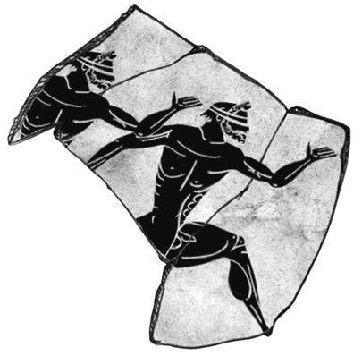
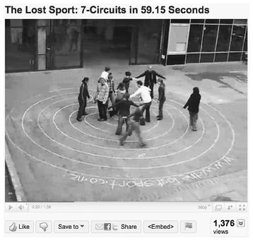

THE LOST RING—A COLLABORATORY FOR PRACTICING NEW SUPERPOWERS
失落的戒指——一个实践新超能力的实验室
The Olympic Games are broken. That’s what I thought to myself in the summer of 2007 when I was first invited to direct an alternate reality game for the 2008 Summer Olympic Games in Beijing.
For 99.99 percent of the world, I thought to myself, the Olympics are all spectacle, a vicarious thrill at best. There’s no real participation. No active engagement. We watch the games, but we don’t actually get to play.
It wasn’t supposed to be that way. The Olympic mission, after all, is to bring the world together through play. The Olympics are also meant to create global community. But even the biggest Olympic fans have virtually no interaction with other people from around the world during the games. We’re not physically at the Olympic Village, where the many elite athletes congregate. Instead, we’re at home watching the games on television. How can we expect to bring the world together through the Olympic Games if 99.99 percent of the world doesn’t get to actually play?
This wouldn’t have bothered me that much if I didn’t actually believe in the Olympic mission. The modern Olympics are the best-known and longest-lasting effort to use games as a platform for establishing common ground, focusing global attention, fostering mutual regard, and creating global community. I couldn’t imagine a better context than the Olympics for trying to build a global collaboratory.
That’s when it occurred to me: could the Olympic tradition of bringing the world together for an intense period of play be extended from athletes to gamers?
If so, it would represent an ideal opportunity to give the growing generation of virtuoso gamers a chance to demonstrate their extraordinary talents to the world. Just like the world’s greatest athletes, our best global gamers could show us collaborative feats previously unthinkable. They could inspire us all to push the limits of our own collaboration powers.
So, as early anticipation for the Olympics mounted a year in advance of the 2008 Beijing games, I accepted an invitation from McDonald’s, a global Olympic sponsor, and the International Olympic Committee to join the efforts of a leading digital creative agency in San Francisco, AKQA. Our shared objective was to create an online game that would give young adults around the world an opportunity to collaborate at a scale as awe-inspiring as the modern Olympic Games themselves. Together, we spent an entire year working with a creative development team of more than fifty people to help computer and video gamers turn the 2008 Summer Olympics into a game that they could play, a collaborative effort that they could undertake.
This is the story of The Lost Ring and how it reinvented the reality of the Olympic Games.
Most of you listening to this podcast will not believe the story I am about to tell you. How is it possible, you will ask, that the greatest sport of all time has been forgotten for almost 2,000 years? I’m Eli Hunt, and this is the legend of the Lost Sport of Olympia.
—from the Secrets of the Ancient Games podcast series, posted online February 24, 2008
The Ancient Greeks banned it, but we’re playing it anyway!
—from an invitation to a Lost Sport of Olympia training event held in San Francisco, April 15, 2008
On February 24, 2008, a fictional character by the name of Eli Hunt launched a real podcast series called Secrets of the Ancient Games. The series was promoted by the International Olympic Committee on the home page of its highly trafficked website with the tag line “Investigate Olympic mysteries and learn about the history of the earliest games!” Visitors to Hunt’s site discovered that the podcast series focused on the so-called Lost Sport of Olympia—a blindfold game that Hunt, an amateur archaeologist, believed the ancient Greeks had mysteriously banned from their Olympics before attempting to destroy all evidence that the game had ever existed.
Was the story of the Lost Sport of Olympia just an ancient urban legend? To prove otherwise, Hunt presented three compelling pieces of evidence: an ancient Greek pottery shard that depicted naked blindfolded runners; a defaced stone tablet dated to 530 BC and inscribed with training instructions for an Olympic sport requiring an odd combination of athletic skills—“trust, endurance, spatial memory, and orienteering”; and a twenty-one-hundred-year-old victory plaque for an ancient Olympic champion named Demetros—a name historians had never seen referenced on any other surviving Olympic artifacts. Even more mysteriously, the victory plaque called the unknown Olympian the “champion of la paigna megas”—the most important game.

Artist’s illustration of the fictional “Pyron’s shard,” which in the story of The Lost Ring dates to 740 BC and is said to have depicted blindfolded Olympic athletes.
(AKQA, 2008)
If the blindfold game really was the most important ancient Olympic event, then why had historians never heard of it before? Hunt left his viewers with the following challenge:Was there really ever a lost sport? If so, how was it played? And why was it considered the most important of all ancient games? If the lost sport indeed existed, we can only assume that the ancient Greeks themselves conspired to hide it from the rest of the world. But what would make them go to such lengths to conceal it? Even with my new research, it is difficult to accept that everything we think we know about the ancient Olympics may be wrong. But if I am right, and if the Greeks did hide the truth, then perhaps there are more clues out there for those of us who look closely enough . . .
Within twenty-four hours, a community of online gamers and bloggers caught wind of the lost-sport mystery and immediately took Hunt up on his challenge. They didn’t necessarily believe his evidence—but they could sense that some kind of interesting game was afoot. And because Hunt subtitled his podcasts in seven different languages—English, French, German, Spanish, Portuguese, Japanese, and Mandarin—these gamers were from all over the world. Using a variety of translation tools to talk to each other, the gamers created a discussion forum, set up a chat room, assembled a wiki, and started e-mailing Hunt for more information. They were determined to get to the bottom of the mystery of the Lost Sport of Olympia.
The gamers followed a trail of clues from Hunt’s online podcast to other blogs and websites, which created a vast web of real historical information and urban legend, and then finally to the real world, where over the span of just six short weeks they discovered twenty-seven physical artifacts: pages of a mysterious illustrated text called the Lost Ring Codex. Each page contained more information about the rules and the purpose of the lost sport. These pages, dated to 1920, were scattered across twenty-seven countries on five continents. The text was written in the universal language Esperanto and apparently had been created and hidden by an earlier generation of lost-sport investigators who had ultimately failed in their efforts to revive the ancient game.
How did they find these hidden artifacts? First they learned a real ancient Greek navigational shorthand known as “omphalos code,” the subject of Eli Hunt’s second podcast. Next, they worked together on a wiki to translate a set of twenty-seven omphalos codes into modern-day GPS coordinates. Then they called in favors from members of their social networks, who called in favors from members of their social networks, to find people willing to recover the pages of the codex in these far-flung real-world locations, from a bookstore in Johannesburg to a hostel in Rio de Janeiro to an art gallery in Bangalore.
As each page was recovered, players volunteered to translate them out of Esperanto into eight different languages—the game’s original seven, plus Dutch, since a sizable contingent of players had formed in the Netherlands—and the gamers were thus able to create a new and complete record of the Lost Sport of Olympia for people all over the world.
The translated codex revealed, among other things, that the ancient game was officially called The Human Labyrinth, but nicknamed The Lost Ring. Piece by piece, players learned that it was a team sport for sixteen players: one blindfolded runner and fifteen “wall members.” The wall members used their bodies to create a human-size labyrinth by standing on string laid out in the shape of an ancient Cretan maze. The runner, unable to see or feel his or her way, would try to escape from the center of the labyrinth as fast as possible, while the wall members hummed to help guide the runner. The official maze dimensions ensured that the teams never had enough members to cover the entire wall at any given time; instead, they would have to race ahead of the runner to create more wall before the runner reached that part of the labyrinth. Each labyrinth team competed against other labyrinth teams to get their runner out the fastest.
So what did the gamers do once they had solved the mystery of the ancient Olympic event? They did what any true gamers would do: they started to play it. And they committed to bringing back the lost sport in time for the real 2008 Summer Olympics. Teams formed across the world: in Singapore, Tokyo, Bangkok, and Shanghai; in London, Paris, Zurich, and Vienna; in San Francisco, Portland, New York, and Dallas; in Buenos Aires and São Paolo; in Johannesburg and in Cape Town; in Sydney, Melbourne, and Wellington.
Every weekend for several months, gamers gathered in different cities to revive the Lost Sport of Olympia and master the blindfolded labyrinth race. They uploaded hundreds of training videos to YouTube and added thousand of training photos to Flickr in order to show off how good they were getting, to teach other people how to play, and to trade strategies with other lost-sport athletes.
The teams got faster and faster as they developed better teamwork and tried out more and more complex strategies. Soon, each weekend a new world record was being set somewhere—Vienna this week, New York City another, Shanghai the next. The U.S. Olympic champion runner Edwin Moses volunteered to serve as the online virtual coach of the lost-sport athletes, sending weekly advice by e-mail and in online chats. Collectively, the lost-sport athletes worldwide egged each other on, improving their best times from an average of three minutes and thirty seconds per race when they started training to an average of fifty-nine seconds per race by summer’s end, with a world’s best of thirty-eight seconds.

A New Zealand lost-sport team posts a training video online.
(Still from video by Joshua Judkins, 2008)
On August 24, 2008, the closing day of the 2008 Summer Olympic Games, six months after Eli Hunt had uploaded his first podcast, one hundred of the world’s best computer gamers put their lost-sport knowledge to the test. The six best human labyrinth teams in the world assembled in Beijing, San Francisco, Salvador da Bahia, London, Tokyo, and Wellington to compete in their own self-organized world championships. As the final medal counts were tallied for the real Olympic Games, these gamers-turned-athletes competed against each other for honorary gold (Tokyo), silver (San Francisco), and bronze (Wellington) medals in the Lost-Sport Olympics.
Those are just some of the highlights of The Lost Ring, an alternate reality game that took a full year to develop and another six months to play, eventually creating a player community made up of citizens from more than one hundred countries on six continents: 28 percent from North America, 25 percent from Europe, 18 percent from the Asia-Pacific region, 13 percent from Latin America, 9 percent from Oceania, and smaller clusters in areas such as Dubai, Israel, and South Africa. More than a quarter of a million gamers participated, and the most active participants—the core team of puzzle solvers, translators, social engineers, researchers, and athletes—numbered above ten thousand—just as many members as the community of official 2008 Olympic athletes. Together, those alternate reality Olympians created a new history of the games for an online audience of more than 2.9 million.7
7
FOR MCDONALD’S and AKQA, The Lost Ring was innovative marketing. Instead of delivering a typical television commercial about McDonald’s support for the Olympics, they would create a branded game that gave players an opportunity to become actively immersed in the Olympics. For the International Olympic Committee, it was a chance to help make a long-standing tradition more relevant to the gamer generation.
For me, it was an opportunity to create a world-class global collaboratory. That’s why every element of The Lost Ring was designed to challenge players to practice extraordinary cooperation, coordination, and cocreation.
To inspire global cooperation, we used the strategy of massively distributing game content in different languages, on localized Web communities, and across far-flung real-world geographic locations in order to make it impossible for any single country, let alone a single player, to experience the game alone. Key online game clues were hidden on regional websites and social networks—for example, the social network Hi5, which is popular in Argentina; the video-sharing site 6rooms, which is popular in China; and Skyrock, a popular blogging community in France. And, of course, physical game objects were hidden in virtually every corner of the world. None of these clues or objects was redundant; each added an important piece of information to the history of the lost sport. Players therefore needed to work together to collect everything and translate it for other players. To do so, they had to radically expand their collaboration horizons, pinging their way through multiple levels of extended social networks to find people capable of showing up at the right place and the right time, or translating one language into another, so someone else could accomplish the next step in the chain that would lead them to their goal.
We also adopted the strategy of telling what gamers call a “chaotic story.”8
8 Instead of presenting players with a single means of consuming the game story, we broke it into thousands of pieces like a jigsaw puzzle and then diffused it across many different media platforms: podcasts and blog posts; videos and online photographs; e-mails and Twitter posts from game characters; even live instant message conversations and face-to-face interactions with characters portrayed by “game masters.” This kind of chaotic storytelling mode forces players to actively make sense of the game content for themselves and for each other, using collective intelligence skills and collaborative authoring platforms. Until players put a chaotic story together, it doesn’t really exist—it’s just a web of evidence, the raw materials for a story. It’s up to the players to do the actual final storytelling, which typically occurs on a wiki that ultimately represents an “official” story of the game.
In the case of The Lost Ring, the players pieced together the chaotic story and worked through the translation challenges primarily on a special Find the Lost Ring wiki they created. By the end of the game, it contained a total of 730 audio, video, and image files, as well as 943 articles—all created by players. The site’s user-created pages included the Timeline, a detailed record of every major discovery and event during the six-month game; the Codex, a compilation of high-resolution scans of the twenty-seven manuscript pages found around the world, accompanied by their translation into nine additional languages; and Labyrinth Training Reports, where best times, videos, and other details of significant training events were recorded.
Of course, beyond the chaotic storytelling, the lost sport itself was designed to require intense collaboration. The rules of the game were cooperative—and they ensured that players would train locally as a team to improve their collective performance as a group, as opposed to competing locally with other athletes. For teams who became good at the game, the synchronized movement would provide a collective experience of flow similar to group dancing. And as in all of my live-action games, I snuck in some oxytocin-releasing touch—the wall members joining hands or gripping each other’s shoulders—in order to strengthen the players’ cooperative bonds. By making the human labyrinth together, they would be engaged in cocreating a peak experience.
But beyond the rules of the sport, what really required intense cooperative effort and coordination was the simple fact that no one had ever played this human labyrinth sport before. No one would know the rules and no one would be any good at it yet. Together, the participants would have to bootstrap their way to mastering the sport. They would have to work together as a global network to discover—to invent—the ins and outs of the sport for the very first time, to teach each other their best tricks, and to spread the secrets of the game online to as many people as possible. Players started scheduling their training sessions to maximize the number of time zones that could participate at the same time in normal waking hours. They spontaneously decided to stream video of their training sessions live via cell phone networks so that other cities’ teams could watch and learn. These were extraordinary acts of coordination.
Finally, mass collaboration works only when everyone in the “mass” has something useful to contribute. Everyone needs to be given an opportunity to contribute from a position of personal strength—who they are and what they do best. So as I developed The Lost Ring as a collaboratory, one of my primary goals was to pioneer a system for helping players identify their own signature strengths, in order to help guide them to the kinds of contributions they could most effectively make in the game. That’s why one of the centerpieces of the Lost Ring Codex was the legend of six ancient strengths, each named for an ancient Greek virtue, and each describing a distinctive way of contributing value to a group:• Sofia: I bring wisdom, creativity, and cleverness to our mission. I am one of the knowledge seekers.
• Thumos: I bring courage, energy, and determination to our mission. I am one of the adventurers.
• Chariton: I bring heart, humanity, and charm to our mission. I am one of the connectors.
• Dikaiosune: I bring leadership, direction, and focus to our mission. I am one of the pilots.
• Sophrosune: I bring balance, self-control, and an open mind to our mission. I am one of the advisors.
• Mythopoeia: I bring optimism, vision, and artistry to our mission. I am one of the truth finders.
The codex included a twelve-question test to help you identify your primary and secondary signature strength. Players would choose from sets of statements the one that described them best. For example:• I am an original thinker.
• I prefer to lead a life of adventure.
• I enjoy helping others.
And:• I like being in charge.
• I am a fair and honest person.
• I always see the beauty around me.
(These choices respond to sofia, thumos, chariton, dikaiosune,
sophrosune, and mythopoeia, respectively.)
Although the game presented these six strengths as a kind of ancient lore, in fact they are drawn directly from seminal positive-psychology research. In 2004, researchers Martin Seligman and Christopher Peterson published Character Strengths and Virtues, a manual with twenty-four such categories, divided into six groups: wisdom and knowledge—cognitive strengths that entail the acquisition and use of knowledge; courage—emotional strengths that involve the exercise of will to accomplish goals in the face of opposition, external or internal; humanity—interpersonal strengths that involve tending to and befriending others; justice—civic strengths that underlie healthy community life; temperance—strengths that protect against excess; and transcendence—strengths that forge connections to the larger universe and provide meaning.9
9
Together with the Values in Action (VIA) Institute on Character, Seligman and Peterson devised a 240-question inventory for measuring the positive emotional strengths that contribute to our success and well-being in life.10
10 The goal of the inventory is “to help people evolve toward their highest potential,” and it’s the most scientifically validated test of personal character in the world. Yet many people have never heard of it, let alone taken it.
I wanted players to be able to find their signature strengths as members of the Lost Ring community because I believe that this positive-psychology resource can play an important role in creating ways for large numbers of people to contribute to a collaborative effort. So I modeled our ancient-strengths questionnaire on an abbreviated version of the official VIA inventory of strengths. My Olympic-themed twelve-question survey wasn’t scientifically validated—and it didn’t dive deep into the twenty-four strengths, just the six higher-order categories. But, as a first introduction to the strengths, I thought it would serve a powerful purpose: to help players start to identify their collaboration strengths and practice putting them to use in the Lost Ring mission.
Once they had completed the ancient-strengths test and had determined their primary and secondary strengths, players were invited to post strength badges on their social network pages, declaring, for example, “I am Sofia,” with a description of what that meant. These badges became a visual cue for other players to start keeping track of others’ strengths—in other words, they were building up their collaboration radar. Eli Hunt and other game characters then began giving players game missions based on their strengths: for example, the brainy sofia players were challenged to research little-known facts about other games that really had been banned from the ancient Olympics, while the adventurous thumos players were given the task of going out into the real world to hunt down the physical artifacts, and the highly social chariton players were encouraged to be the social engineers of the game and figure out how to extend the social network of the Lost Ring community.
Even the lost sport itself had special roles for every kind of strength to play:• Sofia: You are the best engineers. Study the labyrinth plans—and arrive early to design and build the labyrinth.
• Thumos: You make the fastest runners. Get blindfolded and go for it!
• Chariton: You are the best coaches. Cheer on your team and trash-talk others.
• Dikaiosune: You make the best captains. Keep your team strong and focused on getting faster. Keep your wall coordinated and working together!
• Sophrosune: You make the best referees. Make sure everyone follows the rules. Keep time of the best scores.
• Mythopoeia: You tell the best stories. Take film and video of the game! And spread news of the best times from other cities—help your local team keep up-to-date on how the rest of the world is training.
For players trying to recruit more athletes to participate in the lost-sport training events, and to engage the crowds of people who showed up to play but hadn’t been following the online story, the strengths test and assignments proved an excellent resource. It helped the experienced players give prospective players a meaningful way to contribute right away. It gave them a tool for directing new players to areas in which they were likely to experience success and reap intrinsic reward—and it made sure that not one single potential contributor would find himself or herself without a satisfying task.
As Seligman and Peterson have often pointed out, we seem to be happiest when we are putting our signature strengths to good use in a group setting. The best evidence I’ve seen for this argument is when I watched Lost Ring players eagerly adopt their ancient-strength roles and perform them both online and in person as they brought the lost sport to life.
When we first launched The Lost Ring, we did not know where it would go. We gave the players the raw materials for staging their own collaborative effort—a series of online urban legends and mysterious physical documents that suggested the potential to revive a lost Olympic sport—but would they do it? And if so, how?
We were confident we could bring together a global community with our chaotic, multilingual narrative. But would the community actually bring the lost sport back to life? Would they invent their own ways to get not just good at the sport, but Olympic-athlete good at it? When planning the game, we had playtested the lost sport only a few times, mostly with the creative team for the project, and collectively we were very slow and very bad at it. We never imagined the athletic feats that our players eventually made themselves capable of—indeed, no one had ever imagined such a feat until the players undertook it. The lost sport had never really existed—and it never would have, either, if not for the concerted effort of the global gamers.
Edwin Moses, a real gold medal-winning Olympic athlete and multiple world-record setter in the 400 meter hurdles, sat down with our creative team to watch videos of the best players on each continent. He seemed genuinely impressed with the teams’ performance and crafted individual video messages of support for each team. Later he answered players’ questions in a streaming online broadcast, giving serious advice to them about how to best prepare for a gold-medal event. Eventually, he joined us at sunrise on the Great Wall of China, one of the official Olympic event sites, to coach in person the Beijing lost-sport team in our alternate reality gold-medal race. When we had first conceived of a blindfolded human labyrinth race, I never would have imagined that our players would take the game to such a level of athletic excellence, or that we would be able to genuinely engage and impress a real Olympic champion with the sport. But we did—thanks to the players’ collaborative efforts.
In the end, our players produced two extraordinary collaborative results: a complete, extensive history of the ancient lost sport and its modern day revival on the Find the Lost Ring wiki—a 943-page multimedia document coauthored by more than a thousand of the game’s leading players—and a community of athletes that made and raced labyrinths as if they had spent their entire lives (and not just six months) training for it. This was an act of true emergensight on the part of the players. From the complex, chaotic environment of Eli Hunt’s legends and the scattered mysteries of the codex, they saw the opportunity to forge a clear, collaborative path together: to create an epic work of alternate reality history, and to stage this awe-inspiring six-continent spectacle. As a result, I count the lead players of The Lost Ring—particularly the thousand most active players who took ownership of the wiki and coordinated the months-long training in the lost sport—among the true collaboration virtuosos of their generation.
We are all born with the potential to develop collaboration superpowers. Scientific research shows that we have both the ability and the desire from early childhood to cooperate, to coordinate activity, and to strengthen group bonds—in other words, to make a good game together. But this potential can be lost if we don’t expend enough effort practicing collaboration.
Fortunately, we have many collaboratories for doing so already. In addition to global alternate reality games like The Lost Ring, any good online game with co-op mode, collaborative production opportunities, and a thriving Wikia culture, for example, provides the perfect opportunity to practice collaboration superpowers. And thanks to the increasing availability of good games worldwide, we will have more and more opportunities than ever before to develop these superpowers.
This is increasingly true even in developing countries, which traditionally have had limited access to leading-edge online games and game platforms. Today, game developers are creating online game platforms specifically for the technology constraints of emerging technology markets like India, Brazil, and China. For example, the lower-priced game console Zeebo, which describes itself as “the video game console for the next billion,” connects low-energy-demand gamer consoles via mobile phone networks rather than broadband Internet. Meanwhile, networked games are being developed for the mobile phones that are ubiquitous even in the most isolated villages across Africa.
As the game industry continues to emphasize co-op, collective intelligence, and collaborative production modes of play, collaboration superpowers will spread more widely throughout gamer culture. And as more and more people start to think of themselves as gamers—perhaps in no small part because they want to develop their own collaboration superpowers—these extraordinary new skills and abilities will become ordinary—the norm rather than the exception.
So what can we do with the collaboration superpowers we develop over the next decade and beyond? One of the first epic goals for gamers worldwide may be simply to survive the twenty-first century.
In their 2006 book Wikinomics, the breakthrough manual for extreme-scale collaboration in the real world, Don Tapscott and Anthony Williams famously implored: “We must collaborate or perish—across borders, cultures, disciplines, and firms, and increasingly with masses of people at one time.”11
11
“Collaborate or perish” is perhaps the single most urgent rallying cry for our times. The ability to collaborate at extreme scales isn’t just a competitive advantage in business or in life anymore. Increasingly, it’s a survival imperative for the human race. As the Wikinomics authors suggested several years later in an updated preface to the book, “The killer application for mass collaboration may be saving the planet, literally.”12
12
A killer application is a program so valuable, it proves the core value of the larger system and drives massive amounts of people to adopt it; e-mail, for instance, was considered the killer app for home Internet access. I believe wholeheartedly that the core value of developing our collaboration superpowers will be proven by games that help gamers save the real world—by changing how we consume energy, how we feed ourselves, how we create better health, how we govern ourselves, how we conceive of new businesses, and how we take care of each other and the environment.
But these fundamental changes don’t happen overnight—surviving the twenty-first century together will require us to adopt longer horizons of thinking, acting, and collaborating. We need to play games that stretch our collective commitment months, years, or even decades ahead.
We need to start playing with the future.